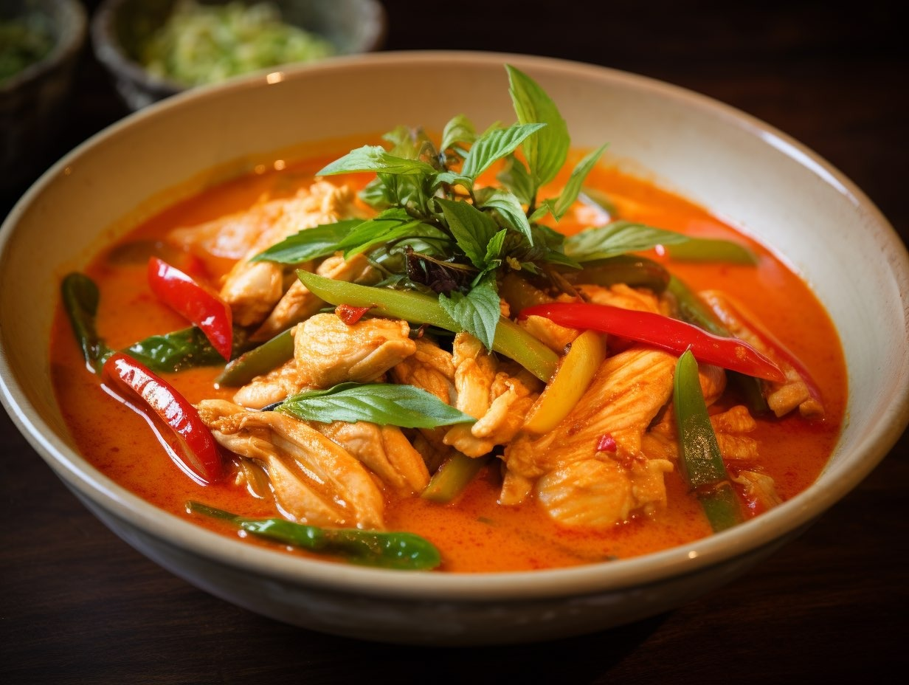
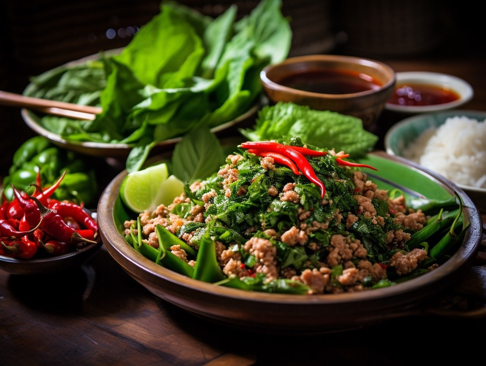

 Red Curry. The authentic Thai red curry is a happy medium between the yellow and green curry options, it is spicier than yellow curry but not as hot as green curry. The stunning red colour of this curry comes from the crushed red chillies which makes up the paste, which also includes garlic and shallots, lemongrass and blue ginger. Made with chicken breast, the paste is added to coconut milk and vegetables like tomatoes, mushrooms and eggplant.
 Spicy Salad. Spicy, salty and hot, Laab is a north-eastern speciality. This traditional spicy salad is usually made with minced meat, as well as a wide range of vegetables such as mint leaves, mushrooms, shallots, chillies, coriander and lime juice, as well as fish sauce. The accompaniment of raw vegetables with this dish helps to cut through their fiery nature of this dish.